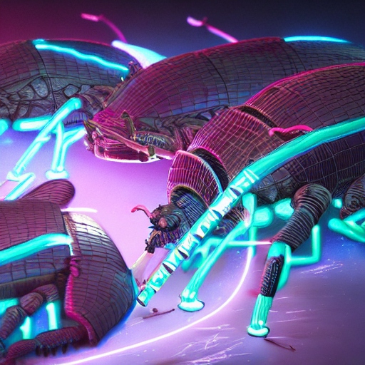

Fauna

Description: Vorgrak Beetles are nocturnal hunters, preying on smaller insects and scavenging plant matter. They communicate through clicks and chirps, often forming intricate patterns of light to attract mates. They are found deep within the dense jungles of Chalupax, particularly near sources of water where vegetation is abundant. They are omnivorous, feeding on both plant matter and smaller creatures. They are preyed upon by larger predators such as the Shadowfang Serpent. They live approximately 10-15 standard Chalupaxian years.
Planet: chalupax